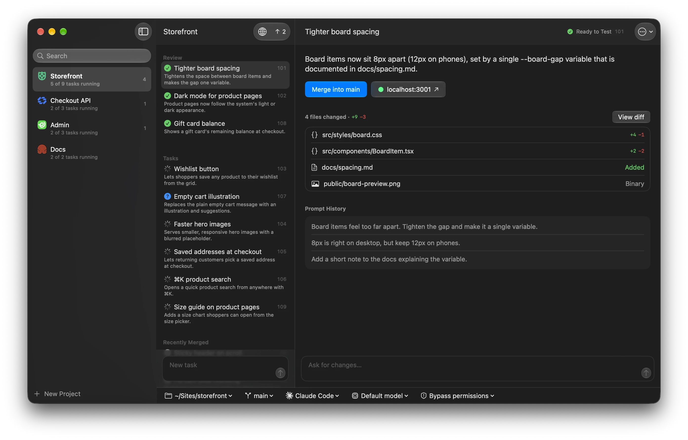
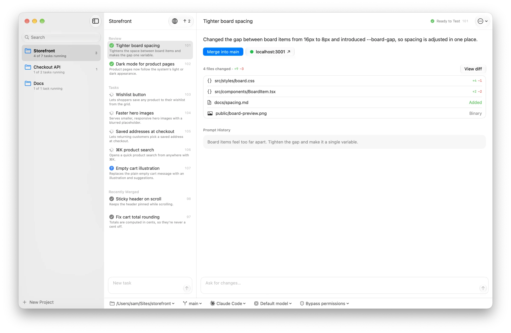
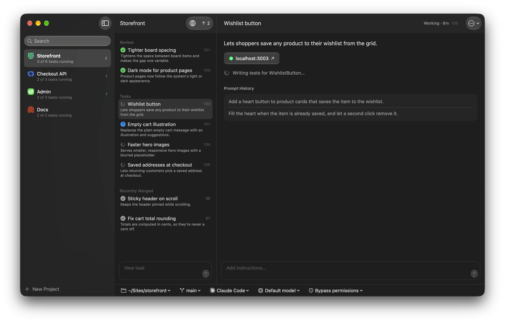
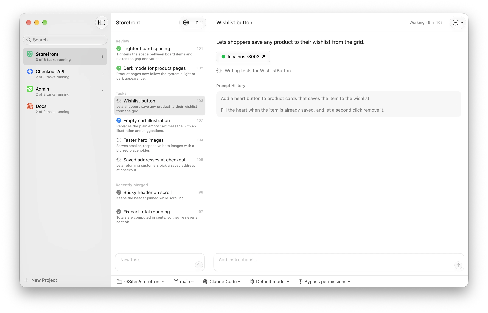
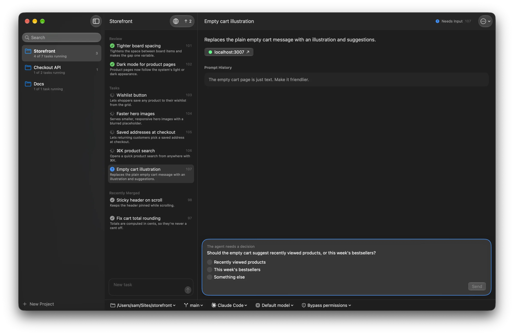
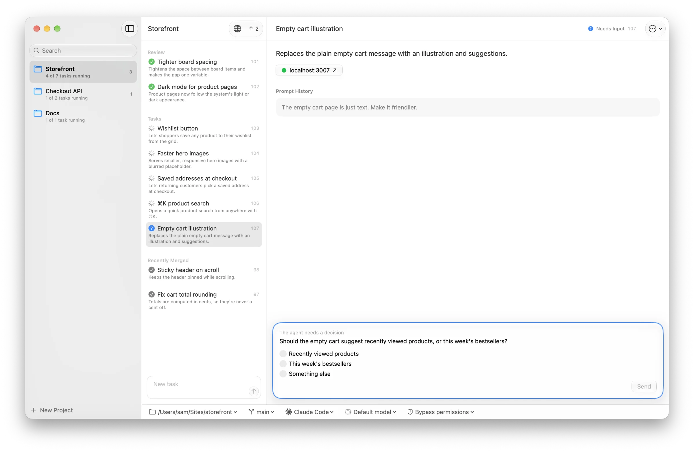

Agents as easy as a to-do list.
Add tasks. Get them done. Agents, worktrees, branches, ports, commits, merges, and cleanup are handled for you.

You write the tasks.
Shift does the rest.
Tighter board spacing
Ready to test- branch
- shift/101
- worktree
- ~/.shift/worktrees/my-project/101
- agent
- Claude Code
- server
- localhost:3001
- commit
- a41f9c2 Tighter board spacing
Merge into main
localhost:3001
- 01
Describe
- 02
Agent works
- 03
Test
- 04
Merge
Calm by design.




